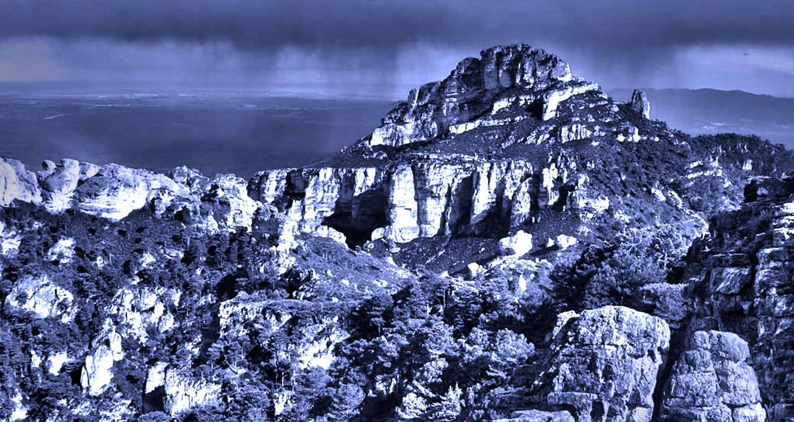
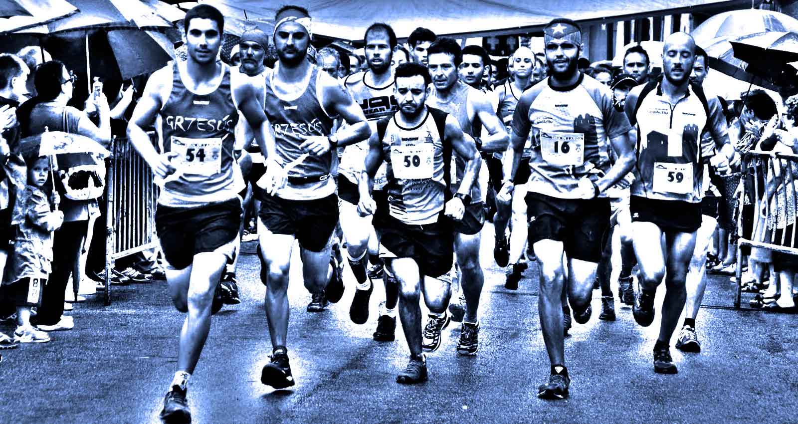
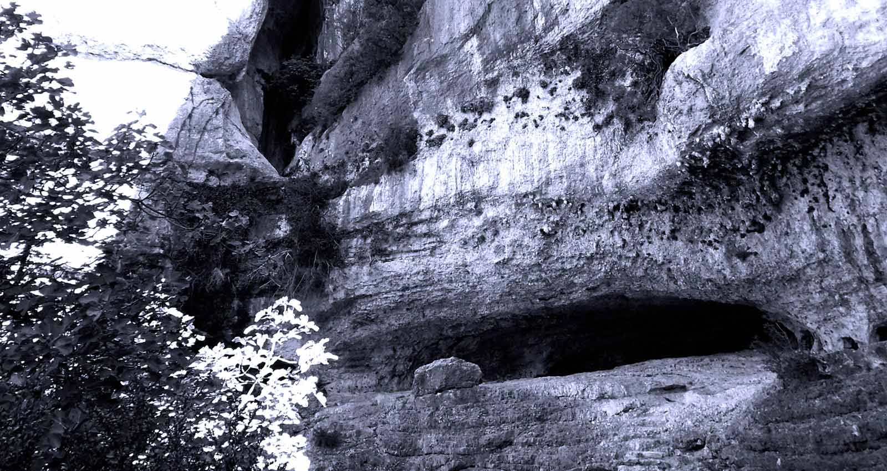
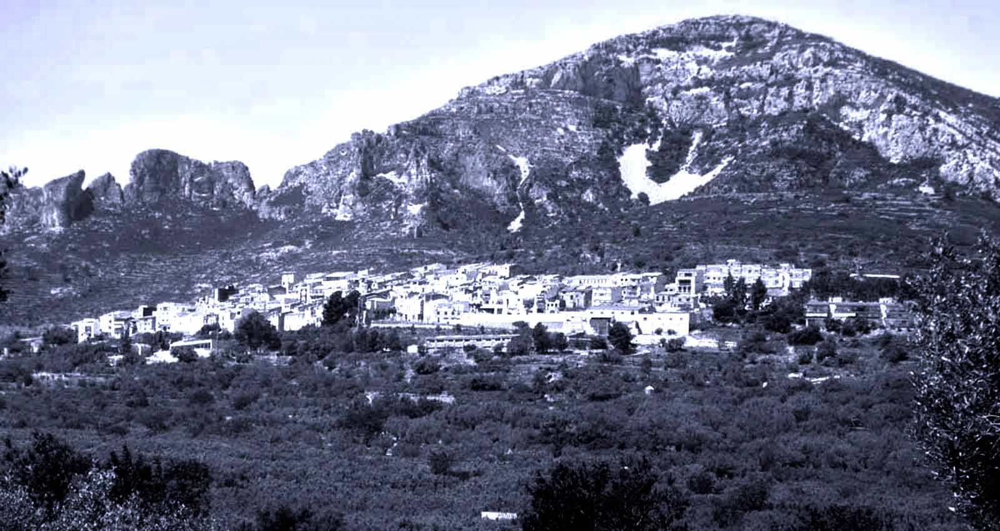




| Hora | |
|---|---|
| 18:00 | Inici entrega de dorsals al Centre Cívic |
| 20:00 | Fi entrega de dorsals al Centre Cívic |
| Hora | |
|---|---|
| 7:30 | Inici entrega de dorsals al Centre Cívic |
| 8:30 | Fi entrega de dorsals CURSA al Centre Cívic (30min abans de cada cursa) |
| 8:45 | Briefing cursa |
| 9:00 | Sortida Cursa Absoluta |
| 9:05 | Registre per Mas Kids al Centre Cívic |
| 9:15 | Sortida Curses Juvenil, Cadet i Infantil, Marxa |
| 9:30 | Sortida Curses Exprés i Junior |
| 9:45 | Curses Mas Kids |
| 11:15 | Temps previst dels primers classificats cursa Absoluta |
| 13:15 | Entrega de premis al Centre Cívic |
| 13:30 | Tancament dispositiu de cursa |
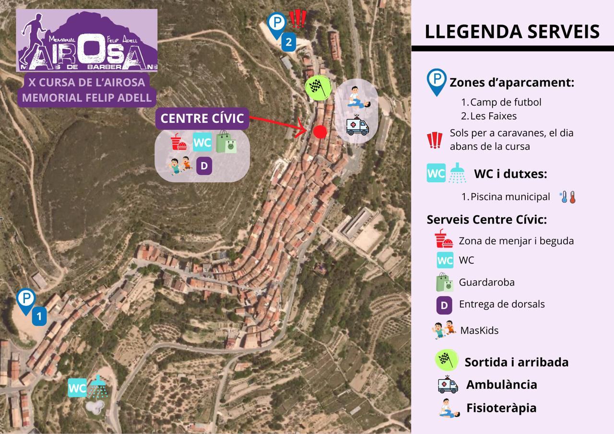
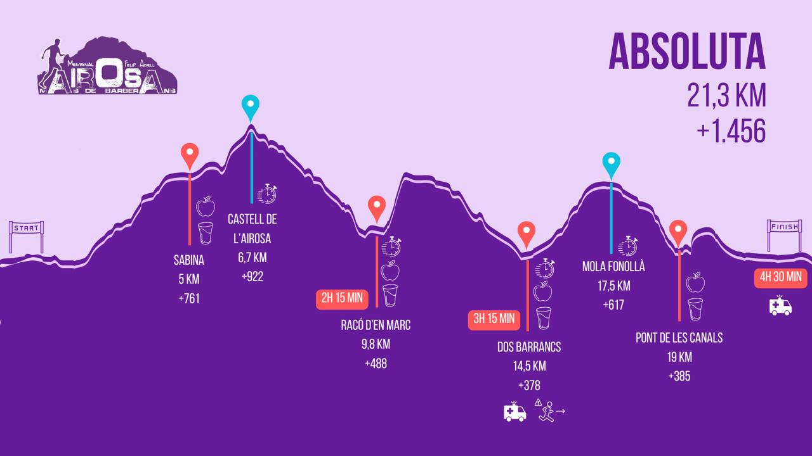
La cursa de l'Airosa pretén oferir al corredor una experiència única amb un recorregut que incorpora els millors trets característics de les muntanyes dels Ports combinat amb un suport incondicional de l'afició del poble perquè tots, des del primer a l'últim, sou part imprescindible de la cursa.
Aquest any, la cursa afegeix dues petites modificacions. La sortida serà al Muro, davant de les noves instal·lacions polivalents on es celebren els actes de la Qunizena Cultural de Mas de Barberans (al Muro, avinguda Joan Celma). A més, a l'últim cim, es farà una aproximació a un dels llocs més emblemàtics de l'entorn, el Flaret. En total, el nou circuit té 21kms amb 1400m de desnivell positiu, amb un 85%-90% de corriols de dificultat tècnica mitja-alta que segur que farà gaudir des del corredor que s'inicia en les curses de muntanya fins al més exigent.
El circuit comença amb breu volta al poble, i passant per la zona del cementiri, comença la pujada que ens conduirà cap al Castell de l'Airosa, punt més alt de la cursa i que en dóna nom. Aquesta pujada ens permetrà gaudir de bones vistes sobre la plana del Montsià passant pel Llit del Rei. Un cop dalt a l'Airosa baixarem per sendera cap l Racó d'en Marc on creuarem la pista de Casetes Velles per tornar una bona pujada fins l'Ombria del Toll Balu, a partir d'allí agafarem una sendera recuperada que ens portarà fins als dos Barrancs. En aquest punt iniciarem el tram final que passarà per l'emblemàtic Flaret i ens conduirà a sobre el Pont de les Canals, ja tocant al poble.
El reglament de la Cursa de l'Airosa extén el reglament del Circuit Terres de l'Ebre i el Reglament de Curses per Muntanya de la FEEC. També caldrà autorizar la participació dels menors d'edat, tant a les curses com a la marxa, complimentant aquesta autorització.
Per puntuar al Circuit Terres de l'Ebre, a part de la inscripció en la web de cronometratge, heu de tenir un perfil creat a la web del circuit.
Així que només ens queda que animar-vos a participar-hi i deixar-vos estimar pel nostre poble, lo Mas!
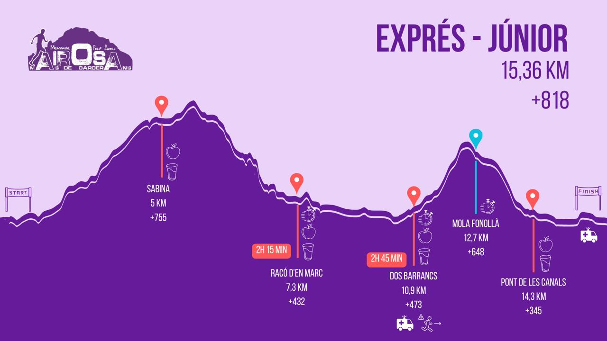
La Cursa de l'Airosa participa del Circuit Exprés de curses de muntanya de les Terres de l'Ebre. Aquest circuit és similar a la cursa Absoluta, però amb certes dresseres (no és puja fins a dalt de l'Airosa i l'Ombria del Toll Blau), quedant un recorregut de 16,5km i +850m de desnivell positiu.
Tant el lloc de sortida com l'horari, i les condicions són les mateixes que la Cursa Absoluta, com està descrit al reglament.
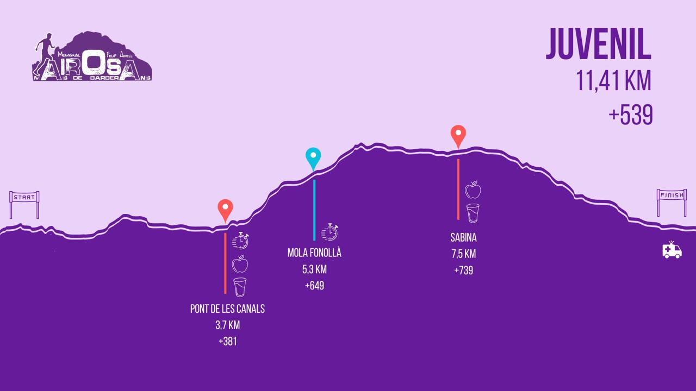
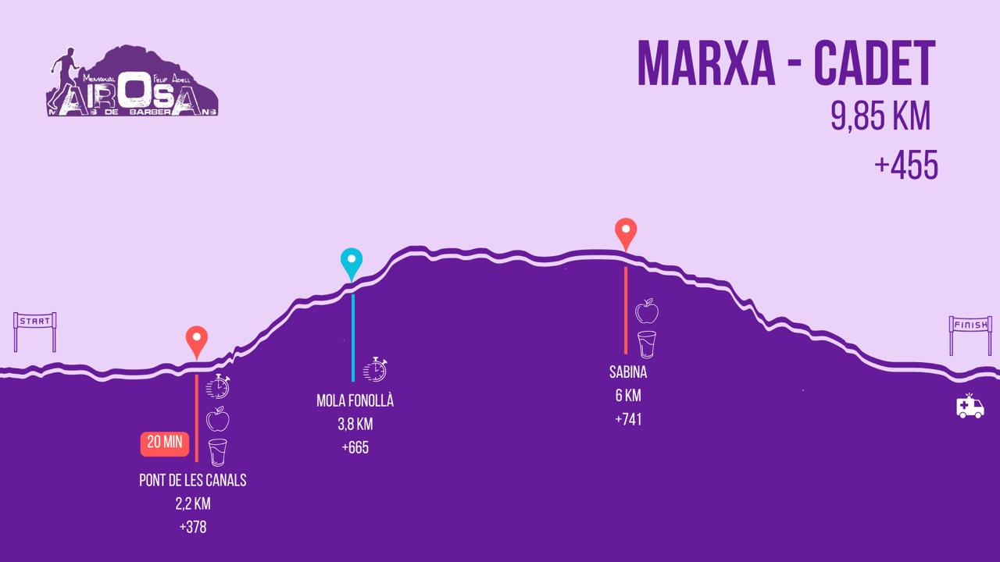
Per als qui vulguin iniciar-se en les curses de muntanya, sense competició, també teniu disponible d'un recorregut similar al de la Cursa, però amb menys desnivell i distància.
El recorregut desnivell positiu d'uns 460m en 9,5km, amb quasi un 70%-75% de corriols de dificultat tècnica mitja-alta que permet sentir una experiència similar a la Cursa Absoluta.
La sortida de la marxa serà al mateix lloc de la Cursa, a la zona del Muro a l'avinguda Joan Celma, i sortirà en sentit invers, començant pel Pont de les Canals, i acabant per la part inicial de la pujada a l'Airosa.
Recordeu que la marxa començarà a les 09:15, i el temps aproximat el primer serà de menys d'una hora, però els qui la facin tota caminant poden tardar unes quantes hores.
La Marxa també tindrà un punt de tall (descrit al reglament), per assegurar la seguretat dels participants.
Curses per als més petits amb samarreta i obsequis per tots amb un cost simbòlic de 5 euros. Link a inscripcions o bé fent-ho presencialment el dia de la cursa.
Clica l'any per veure els resultats
Clica l'any per veure les fotos i vídeos
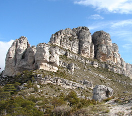
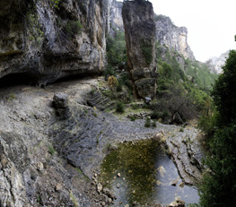
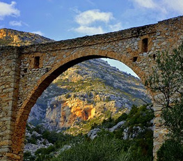
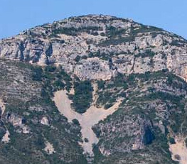
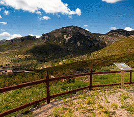
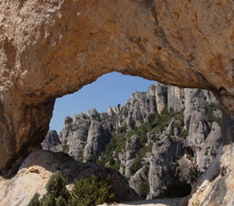

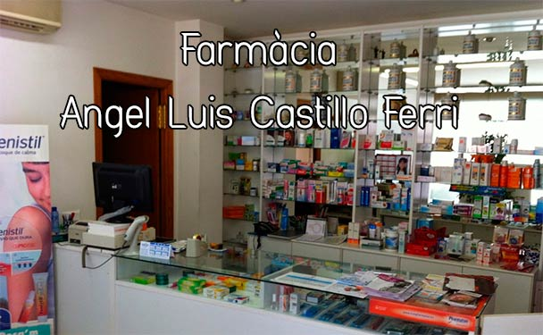
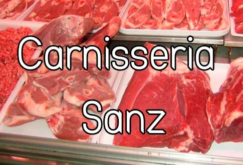
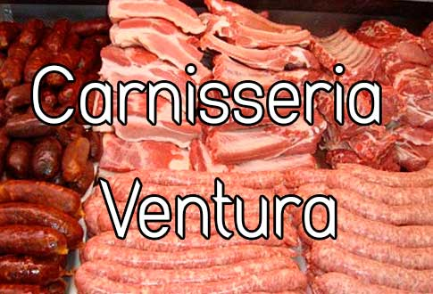
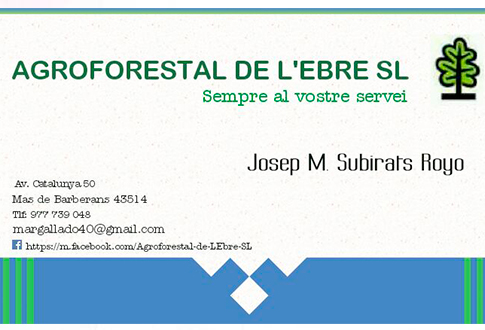
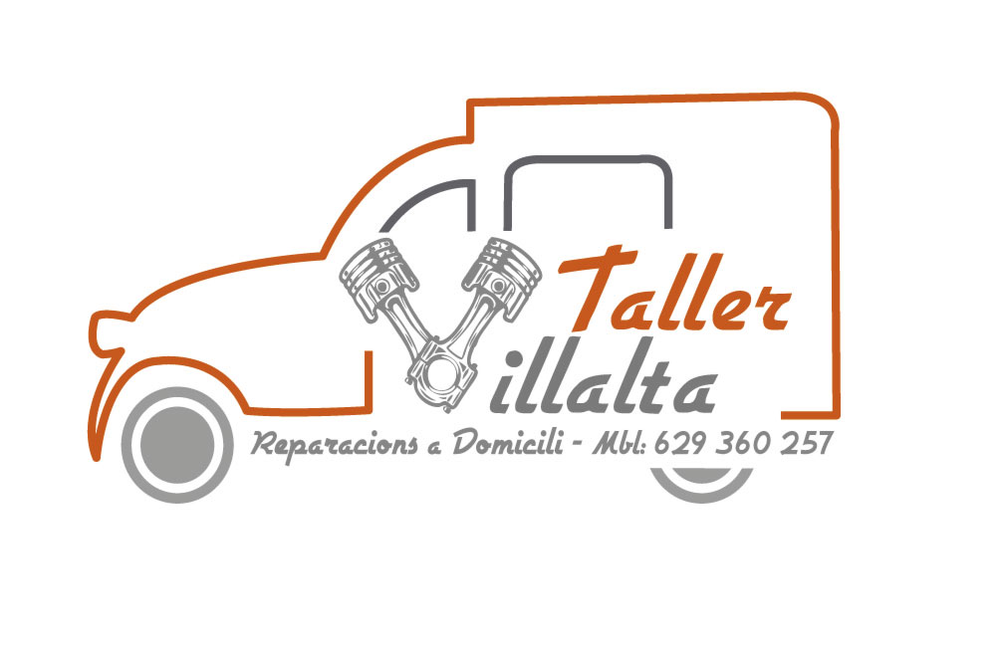
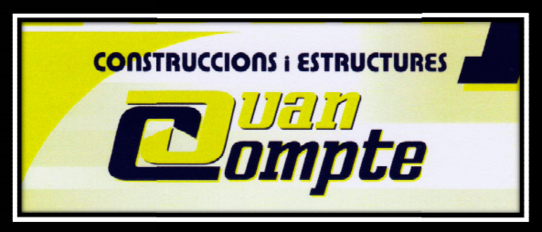
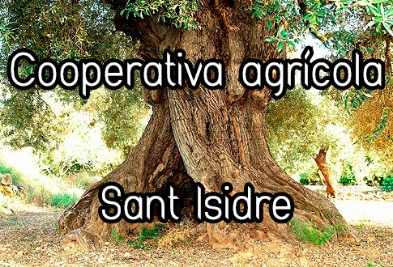
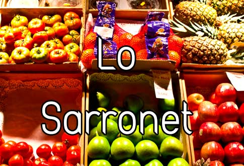
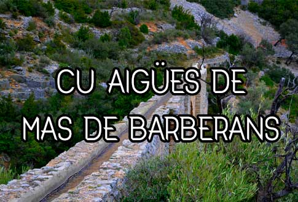
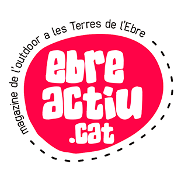

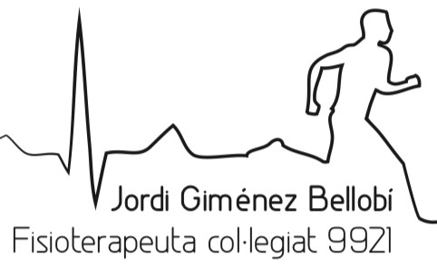
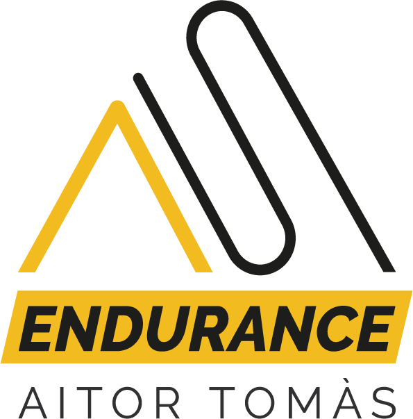
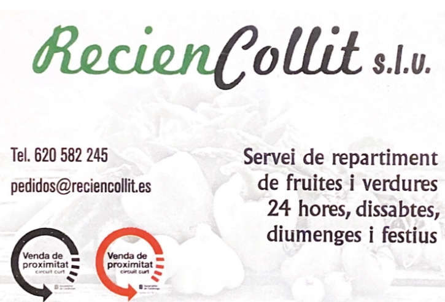
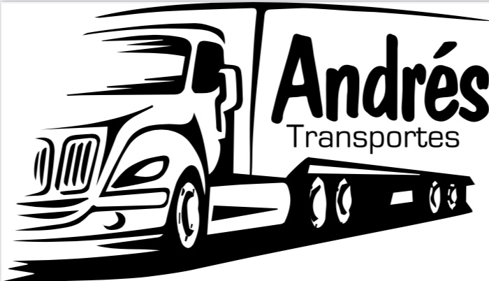
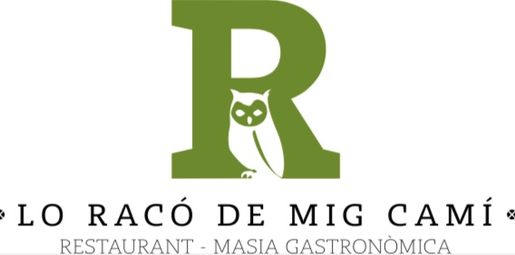
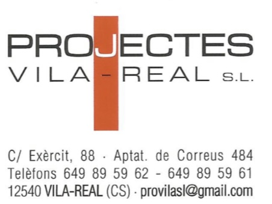
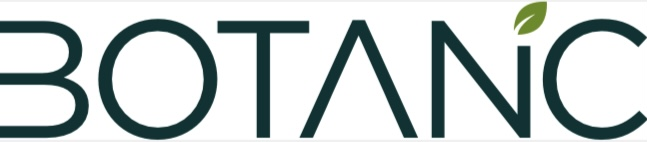
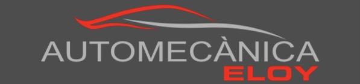
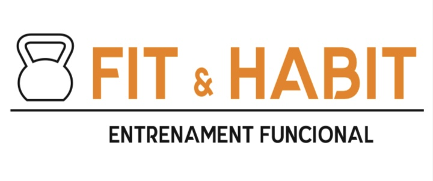
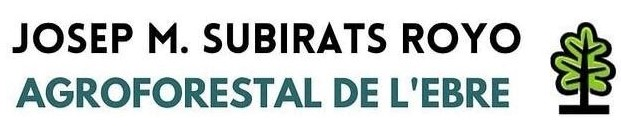
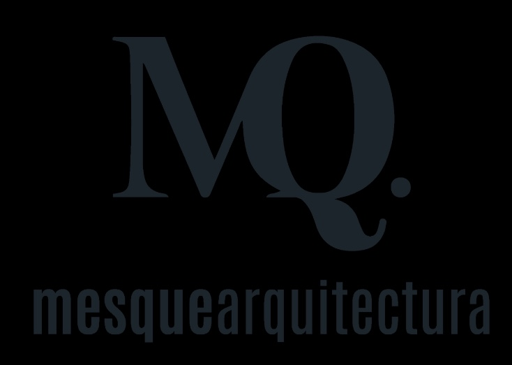
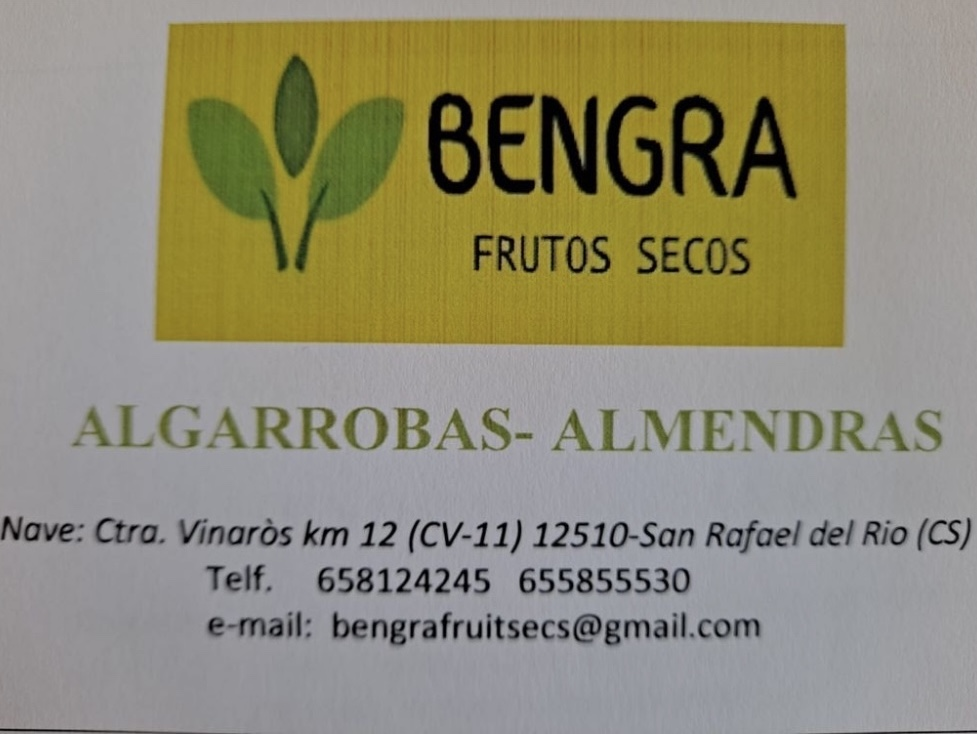


.jpg)